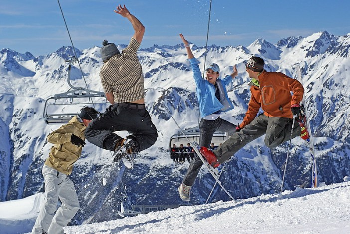

Горнолыжные курорты Австрии составляют львиную долю всех мировых рейтингов лучших горнолыжных курортов.
Список австрийских курортов очень обширный, ведь их 423 по всей стране!
Цель нашей статьи — помочь выбрать наиболее подходящий, что не так-то просто сделать, особенно, если это первая поездка.
В Австрии доступно свыше 22 тысяч километров идеально подготовленных и разнообразных снежных спусков! Австрийцы создали само понятие — горнолыжный спорт, они создали технологии ухода за склонами и систему маркировки трасс от синей до черной. Они придумали горные лыжи: прикрепили к деревянным лыжам металлический кант, который позволил уверенно держаться поперек склона, а потом добавили «талию», облегчив лыжникам повороты в дуги. Они знают все о лыжах, бордах, склонах и снеге.
Зёльден— самый популярный горнолыжный курорт Австрии среди русскоязычных туристов, его называют «австрийской Ибицой». Горные лыжи днем и ночные клубы до самого утра. Регион катания 167 км, перепад высот 1873 м. Современные подъемники, отличный снег на склонах, круглогодичное катание на ледниках.
Расположение: центральная часть австрийского Тироля, долина Отцталь
Сезон: конец ноября – начало мая, на леднике — круглый год
Количество подъемников: 34
Протяженность трасс, км: 147
Синих / красных / черных, км: 50/75/22
Самая высокая/низкая точка катания: 3250/1377
Самая протяженная трасса, км: 11
| Возраст | 19-65 | 6-15 | 16-18 | 65+ |
|---|---|---|---|---|
| с 11:00 | €52 | €28 | €41 | €44 |
| с 12:00 | €48 | €26 | €38 | €40 |
| с 13:00 | €44 | €22 | €33 | €35 |
| 1 день | €56 | €31 | €45 | €47 |
| 2 дня | €111 | €61 | €89 | €94 |
| 3 дня | €163 | €90 | €130 | €139 |
| 5 дней | €265 | €146 | €212 | €225 |
Заальбах-Хинтерглемм — один из самых больших горнолыжных регионов Австрии. Местные горы, восточная сторона Китцбюэльских Альп, с удивительно мягкими очертаниями, как будто специально созданы для горнолыжного отдыха. Зааальбах более молодежный и движняковый. Хинтерглемм – более респектабельный и дорогой.
Расположение: зальцбургская долина Глеммталь, севернее Целлерского озера
Сезон: декабрь – середина апреля
Количество подъемников: 70
Протяженность трасс, км: 310
Синих / красных / черных, км: 200/95/15
Самая высокая/низкая точка катания: 2096/800
Самая протяженная трасса, км: 7
| Срок действия | Взрослые | Подростки (16-18) | Дети (6-15) |
|---|---|---|---|
| с 11:30 | €46 | €34.5 | €23 |
| с 12:30 | €46 | €34.5 | €23 |
| 1 день | €56.5 | €42 | €28 |
| 2 дня | €109.5 | €82 | €54.5 |
| 5 дней | €245 | €183.5 | €122.5 |
| 5 из 7 | €270 | €202.5 | €135 |
Когда речь идет о лучших лыжных склонах в Австрии, это конечно Тироль, а лучший курорт в Тироле – это Ишгль (Ischgl).
Тут можно покататься сразу в двух странах – Австрии и Швейцарии, регион Самнаун это уже Швецария, в которую можно попасть не отстегивая лыж. Тут более солнечные склоны, можно поваляться в шезлонгах у баров и позагорать.
Расположение: западная часть австрийского Тироля, в долине Пацнаун
Сезон: конец ноября – конец апреля
Количество подъемников: 46
Протяженность трасс, км: 240
Синих / красных / черных, км: 25/60/15
Самая высокая/низкая точка катания: 2872/1400
Самая протяженная трасса, км: 11
| Срок действия | Взрослые | Пенсионеры (60+) | Дети (8-16) |
|---|---|---|---|
| с 14:00 | €28 | €28 | €17.5 |
| с 11:30 | €46.5 | €46.5 | €25.5 |
| 1 день | €56 | €56 | €32.5 |
| 2 дня | €111.5 | €111.5 | €64 |
| 5 дней | €268 | €230.5 | €151.5 |
| 5 за 7 дней | €276 | €249 | €158 |